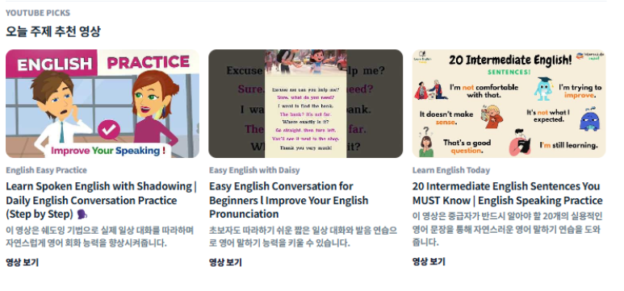

도메인 기준과 작업 결과를 문서로 남깁니다
TFT-gogo의 게임 가이드/패치노트 명세와 Mapingo의 API 문서화처럼 구현 범위와 검증 기준을 문서로 맞춥니다.


서비스의 데이터 흐름을 설계하고 API 구현, 인증/결제, 운영 검증까지 연결해 보는 백엔드 개발자를 지향합니다.
Mapingo 미니프로젝트에서는 인증, 세션 관리, 외부 결제, API 문서화처럼 서비스 운영에 필요한 백엔드 흐름을 중심으로 작업했습니다.
TFT-gogo 파이널 프로젝트에서는 게임 가이드와 패치노트 도메인을 맡아 DB 페이지네이션, 안전한 콘텐츠 갱신, AI 응답 신뢰성까지 구현하고 검증했습니다.
외부 데이터, 패치 버전, 사용자 요청 흐름을 나누어 보고 API와 화면에서 필요한 기준을 맞춥니다.
인증, 사용자 정보, 결제/구독, 관리자 조회처럼 실제 서비스 사용에 필요한 API 흐름을 연결합니다.
환경 변수, 외부 API, redirect, healthcheck처럼 서비스가 멈출 수 있는 지점을 미리 점검합니다.
두 팀 프로젝트를 중심으로 구현 범위와 결과를 먼저 보여주고, 트러블슈팅·기술 결정·AI 활용 기록은 근거 페이지로 분리했습니다.

지도 기반 AI 영어 학습 서비스의 백엔드 서버에서 인증, 유저 API, 결제/구독, 관리자 API와 문서화 흐름을 구현했습니다.
게임가이드 조회를 DB 페이지네이션으로 전환하고 공용 락으로 다중 서버의 갱신 경쟁을 막았습니다. 로컬 JMeter 50 VU·300초·3회 혼합 조건에서 패치노트 통계 쿼리 통합 전후를 비교했습니다.
Mapingo의 인증·캐시 이슈와 TFT-gogo의 성능 병목, 부분 파싱 데이터 보존, 갱신 경쟁 조건, 마이그레이션 문제를 재현과 검증 근거 중심으로 정리합니다.
페이지 보기Mapingo와 TFT-gogo에서 사용한 기술을 역할, 선택 이유, 검증 기준에 맞춰 한 페이지에 모아 정리했습니다.
페이지 보기노션의 요구사항 인터뷰·구현 명세·공격 관점 QA 기록을 바탕으로 AI 기능 설계와 입력·응답 검증, 배포 설정 점검 과정을 정리합니다.
페이지 보기배포 워크플로와 공개 API를 다시 확인하고, 게임가이드·패치노트·AI 연동 기여를 PR과 운영 기록에 연결했습니다.
Spring Boot 백엔드 개발을 맡아 API 계약, 데이터 모델링, 외부 서비스 연동, AWS 배포 검증을 수행했습니다.
Mapingo와 TFT-gogo에서 인증, 결제, 데이터 수집, AI 연동처럼 사용자 흐름에 직접 닿는 백엔드 기능을 맡아 구현했습니다.
기능을 단순히 완성하는 데서 멈추지 않고, 데이터 기준과 외부 연동 조건, 배포 설정까지 함께 확인하는 방식으로 작업합니다.
세부 구현 기록은 각 프로젝트 페이지에 분리하고, 홈에서는 제가 어떤 방향으로 문제를 바라보는지 보여주도록 정리했습니다.
데이터 수집과 조회 기준 정리
API와 외부 연동 흐름 구현
배포 전 운영 설정 점검
TFT-gogo의 게임 가이드/패치노트 명세와 Mapingo의 API 문서화처럼 구현 범위와 검증 기준을 문서로 맞춥니다.


CORS, OAuth2 redirect, AI 서버 설정, 화면 overflow처럼 구현과 배포 중 확인한 문제를 재현 조건과 해결 방향으로 정리합니다.


테스트 실패, 빌드 경고, 화면 확인 결과를 기준으로 수정 범위를 좁히고 같은 문제가 반복되지 않도록 다시 확인합니다.